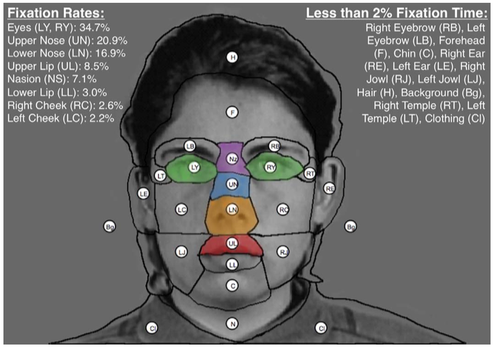
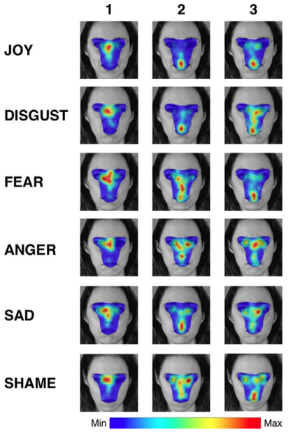

Eye movements during emotion Recognition in Faces
Abstract
When distinguishing whether a face displays a certain emotion, some regions of the face may contain more useful information than others. Here I asked whether people differentially attend to distinct regions of a face when judging different emotions. Experiment 1 measured eye movements while participants discriminated between emotional (joy, anger, fear, sadness, shame, and disgust) and neutral facial expressions. Participant eye movements primarily fell in five distinct regions (eyes, upper nose, lower nose, upper lip, nasion). Distinct fixation patterns emerged for each emotion, such as a focus on the lips for joyful faces and a focus on the eyes for sad faces. These patterns were strongest for emotional faces but were still present when viewers sought evidence of emotion within neutral faces, indicating a goal-driven influence on eye-gaze patterns. Experiment 2 verified that these fixation patterns tended to reflect attention to the most diagnostic regions of the face for each emotion. Eye movements appear to follow both stimulus-driven and goal-driven perceptual strategies when decoding emotional information from a face.
Experiment 1: Eye-tracking of Emotional Judgments
I recorded eye movements as participants discriminated neutral from emotional expressions of particular emotions. I blocked these decisions by emotion type so that we could examine fixation patterns on emotional faces (reflecting both stimulus- driven and goal-driven patterns) and neutral faces (reflecting only goal-driven patterns).
Figure 1. Illustration of face stimuli (A) and experimental paradigm (B). Participants were presented with blocks of trials containing half neutral faces (0% intensity) and half emotional faces (varying from 20%–60% intensity) and were asked to judge whether each face had any amount of a particular emotion present (e.g., fear).
|

Figure 2. Illustration of 21 facial regions of interest (ROIs). We identified five main facial ROIs—eyes (green), upper nose (blue), lower nose (orange), upper lip (red), and nasion (purple)—that accounted for more than 88% of all fixations. |

Figure 3. Fixation distributions for the first three fixations on emotional (20%–60%) face image trials for one face identity. As participants made more fixations, distinct patterns emerged across emotions in what regions were fixated most. Specifically, at the first fixation, the upper nose was a particular popular fixation location although there was still considerable variability at the region across emotions. As participants made additional fixations, a general pattern emerged such that there was increased fixation at the upper lip for joy and disgust whereas there was increased fixation at the eyes for anger, sadness, and shame.
|
Fixation Patterns Predict Facial Emotion
If the type of facial emotion displayed (or sought by the observer) systematically affects the observer’s pattern of eye movements, it should be possible to predict the type of face displayed (or sought) by statistical analysis of the eye movement sequence for any given trial. I separately submitted the first 1–N fixation regions (where N 1⁄4 1 to 8) from every trial in the data set to a naive Bayesian classifier for categorical data, using two thirds of the data for training and one third for testing. I calculated the average classification accuracy across 100 fit/test iterations, selecting train/test sets independently for each iteration for (a) all trials, (b) emotional image–only trials, and (c) neutral trials.

Figure 4. Classification accuracy for each condition (emotional face trials, neutral face trials, both trial types, and chance prediction). Classification accuracy for emotional trials was highest, consistent with the stronger fixation patterns observed in our other analyses. Neutral trial classification accuracy was lower but still well above chance. Consistent with the observed fixation patterns of humans, the diagnostic value of fixation data was primarily reached in the first two fixations.
Experiment 2: Varying Diagnostic Information of Faces Alters Performance
In order to verify whether different areas of our face stimuli contain more or less diagnostic information for each emotion, I asked a new set of participants to make similar judgments of the emotional content of faces, but I occluded information either from the eye region or the mouth region. I predicted that for emotion judgments for which participants in Experiment 1 fixated the eye region at relatively high rates (i.e., anger and shame), occluding that region would decrease emotion detection accuracy. In contrast, for emotions for which the mouth region was particularly highly fixated (i.e., joy and disgust), occluding that region would decrease emotion detection accuracy.
Figure 5. For all trials, participants were briefly shown a face with either the eyes or mouth occluded. The task was to judge whether the face had a particular emotion or not. (A) An example of a joyful face with the eyes covered; (B) an example of the same face but with the mouth covered.
Emotion judgment performance depended on which regions of the face were covered in a manner consistent with the fixation patterns found in Experiment 1. Performance was best for joy and disgust when the eyes were covered and the mouth was visible, consistent with the eye fixation rates we observed in Experiment 1 in which observers tended to fixate more at the upper lip and less at the eyes relative to other emotions. Figure 5 provides a strong illustration of this effect: Joy is easy to detect in the left face but harder to detect in the right face. I failed to find any meaningful differences for fearful faces, which is consistent with the diagnostic regions identified in Experiment 1; the eyes and upper lip are not differentially important to identify fear. For anger, performance was significantly better when the eyes were visible compared to when they were covered. A similar trend was also observed for shameful faces. Both of these effects are consistent with the diagnostic areas identified in Experiment 1. I did not see any significant differences for detecting sadness when covering the mouth versus the eyes even though Experiment 1 did suggest different levels of diagnosticity for those regions. Overall, five out of the six emotion types showed results consistent with the predictions given the diagnostic areas of emotional faces identified in Experiment 1.